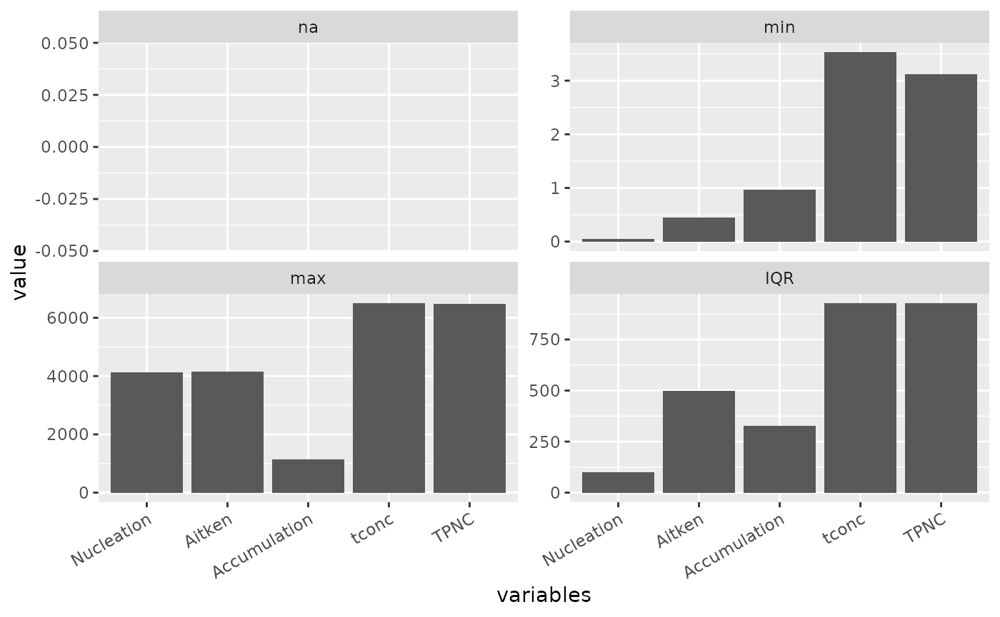
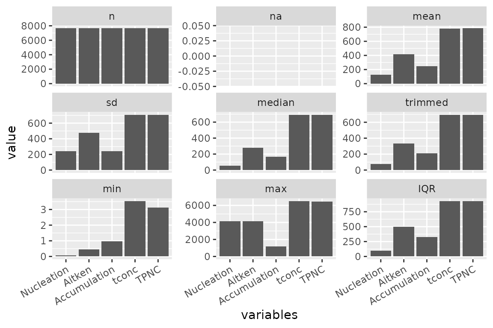
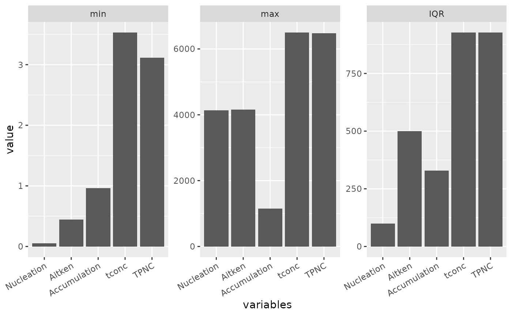
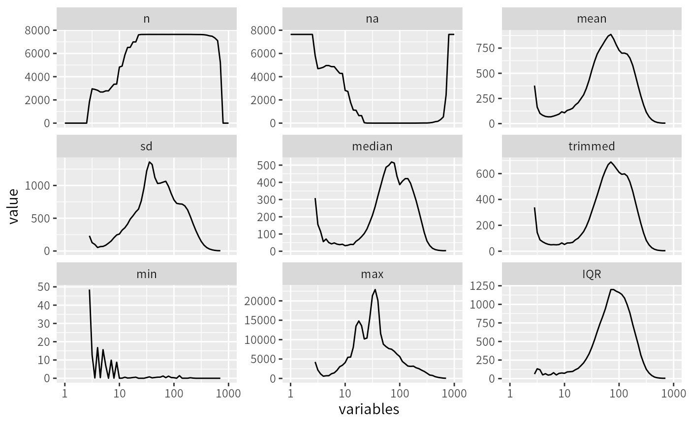
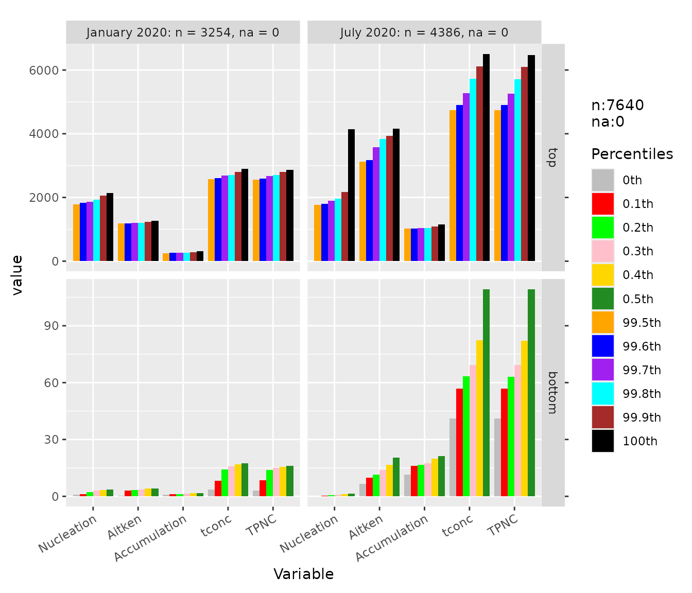
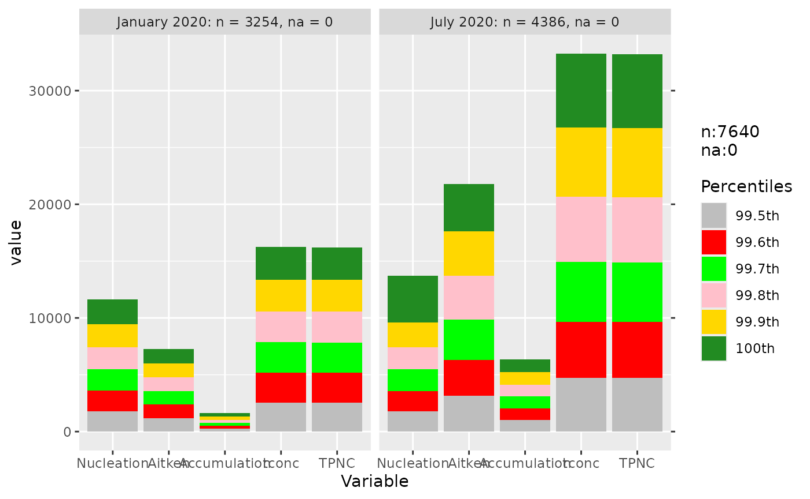
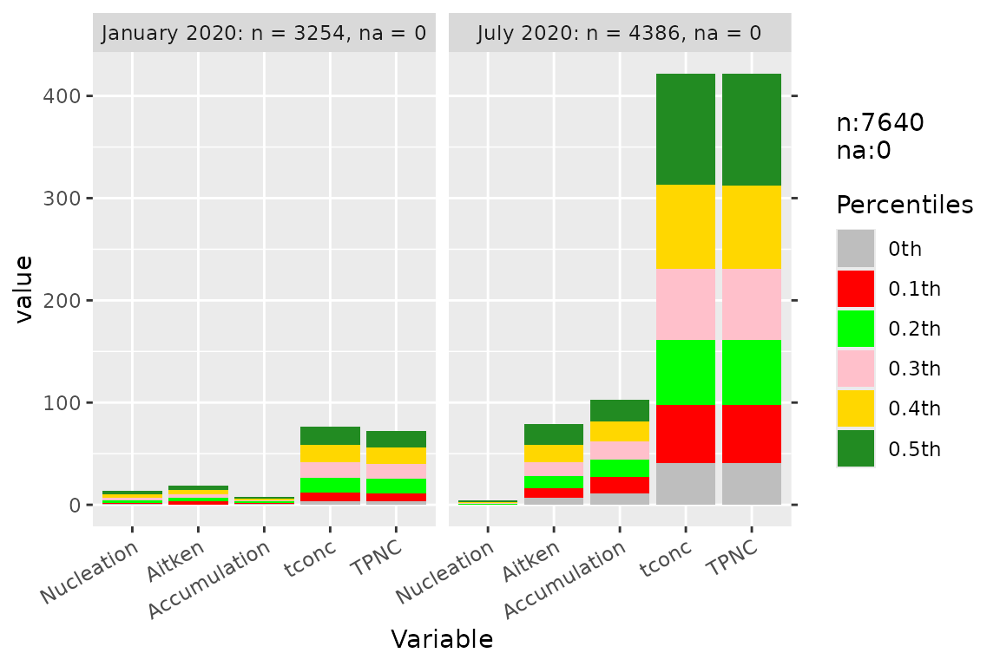
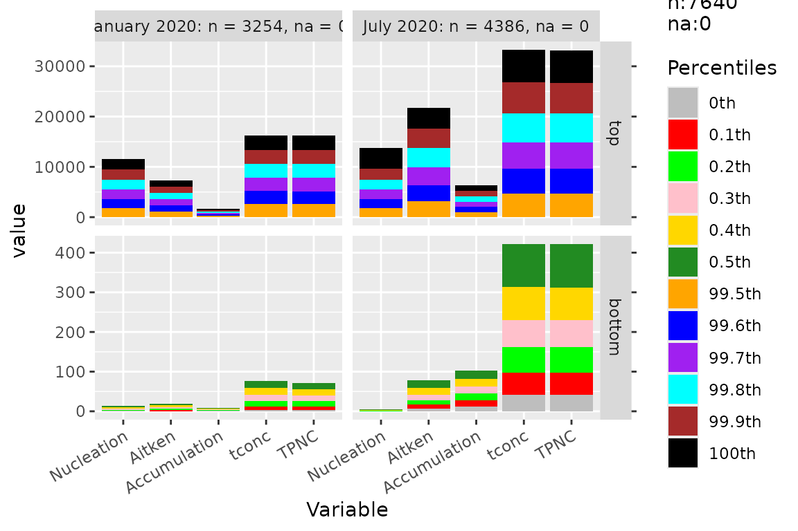
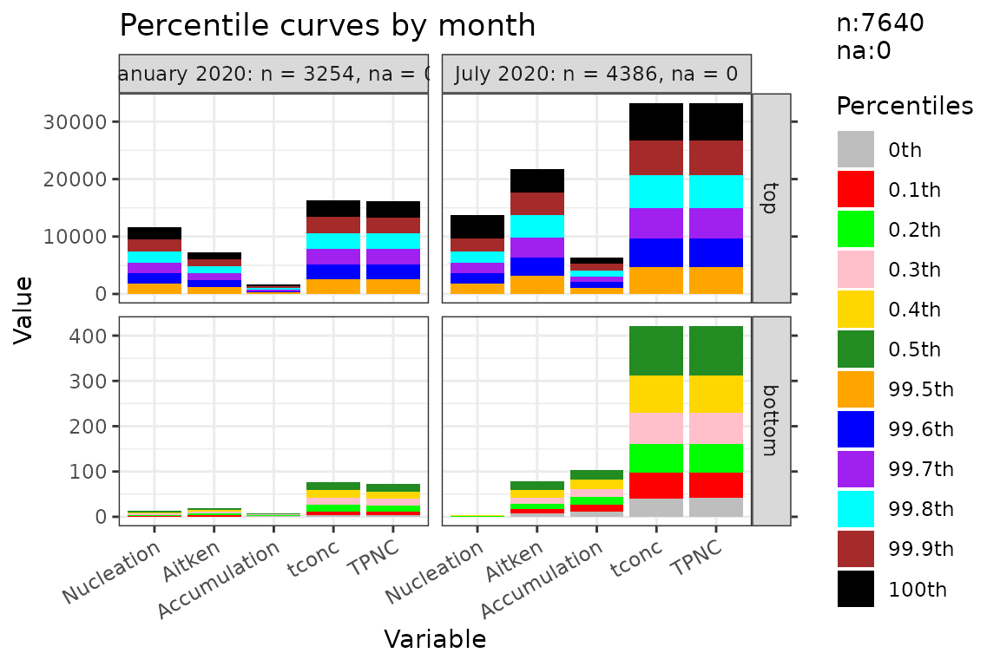

dataprep: descriptive statistics and diagnostic plots
Source:vignettes/dataprep-plots.Rmd
dataprep-plots.RmdOverview
dataprep provides two families of plotting helpers, both
built on top of the C++ descriptive backends:
descplot()— descriptive statistics (n,na,mean,sd,median,trimmed,min,max,IQR) computed in C++ and displayed as line or bar charts.percplot()— top and bottom percentile curves, useful for detecting heavy tails and percentile-based outlier cutoffs.
Both share the same interface style: a data frame, a numeric range,
and optional grouping. Use data1 (7,640 rows × 7 columns)
for quick demos, and data (7,640 × 65) for full-size
examples.
Under the hood, descplot() calls descdata()
(which calls desc_stats_cpp()), and percplot()
calls percdata() (which calls quantile() from
base R on each column). Both return a ggplot object, so all
usual ggplot2 layers apply.
Descriptive statistics
Line plot, numeric variable names
When variable names are essentially numeric (e.g. particle diameters
such as 3.16, 3.55, …), descplot() draws a line plot with a
log-scaled x axis.
descplot(data1, cols = 3:7) +
ggplot2::theme(axis.text.x = ggplot2::element_text(angle = 30, hjust = 1))
Selected statistics
Pass a subset of statistics by index or by name to focus the plot.
descplot(data1, cols = 3:7,
stats = c("na", "min", "max", "IQR")) +
ggplot2::theme(axis.text.x = ggplot2::element_text(angle = 30, hjust = 1))
The stats argument accepts both forms — numeric indices
(1:9) and character names ("na",
"min", "max", "IQR") — and can
mix them.
Bar chart, character variable names
When variable names are character (e.g. aerosol mode names
Nucleation, Aitken,
Accumulation), descplot() falls back to a bar
chart.
descplot(data1, cols = 3:7) +
ggplot2::theme(axis.text.x = ggplot2::element_text(angle = 30, hjust = 1))
Control facet layout
descplot(data1, cols = 3:7, stats = c("min", "max", "IQR")) +
ggplot2::theme(axis.text.x = ggplot2::element_text(angle = 30, hjust = 1))
Full-size data
descplot(data, cols = 5:65)
#> Warning: Removed 84 rows containing missing values or values outside the scale range
#> (`geom_line()`).
The underlying table
If you only need the numbers (not the plot), call
descdata() directly. It returns a data frame with one row
per variable and one column per statistic.
descdata(data1, cols = 3:7, stats = c(2, 3, 4, 7:9))
#> variables na mean sd min max IQR
#> 1 Nucleation 0 123.8971 240.3190 0.05491765 4137.091 99.1508
#> 2 Aitken 0 414.8573 477.1444 0.44507100 4159.520 500.0387
#> 3 Accumulation 0 244.5512 242.2446 0.96263700 1154.862 328.2945
#> 4 tconc 0 783.0922 706.7581 3.52890000 6495.960 926.9235
#> 5 TPNC 0 783.3057 706.7105 3.11677730 6474.645 927.0629Percentile curves
Full percentile range
percplot() computes the extreme percentiles (0 to 0.5
and 99.5 to 100 by default) and draws them against the variable axis.
This is the visual companion to condextr() and
percoutl().
percplot(data1, cols = 3:7, group = 2) +
ggplot2::theme(axis.text.x = ggplot2::element_text(angle = 30, hjust = 1))
Top percentiles only
percplot(data1, cols = 3:7, group = 2, part = "top") +
ggplot2::theme(axis.text.x = ggplot2::element_text(angle = 30, hjust = 1))
Bottom percentiles only
percplot(data1, cols = 3:7, group = 2, part = "bottom") +
ggplot2::theme(axis.text.x = ggplot2::element_text(angle = 30, hjust = 1))
Numeric axis control
For numeric variable names, the x axis can be forced to linear scale
with num_xaxis = "numeric".
percplot(data1, cols = 3:7, group = 2, num_xaxis = "numeric") +
ggplot2::theme(axis.text.x = ggplot2::element_text(angle = 30, hjust = 1))
The num_xaxis argument controls how the x axis is
treated when column names are numeric:
-
"auto"(default) — uses a log scale if the column names are evenly spaced on a log scale with a range ratio of at least 1000; otherwise keeps them as factor levels. -
"log"/"numeric"— force the corresponding scale. -
"character"/"factor"/"keep"/FALSE— keep the column names as factor levels.
The underlying table
percdata() returns the same table that
percplot() draws.
percdata(data1, cols = 3:7, group = 2, part = "top")
#> monthyear percentile Nucleation Aitken Accumulation tconc TPNC
#> 1 January 2020 99.5th 1776.874 1177.590 251.2686 2570.553 2564.096
#> 2 January 2020 99.6th 1831.310 1193.524 258.8365 2602.852 2598.483
#> 3 January 2020 99.7th 1865.419 1197.455 264.1341 2682.432 2677.426
#> 4 January 2020 99.8th 1932.728 1209.706 268.3745 2707.422 2710.492
#> 5 January 2020 99.9th 2057.681 1226.880 281.9808 2809.065 2806.129
#> 6 January 2020 100th 2144.838 1260.049 320.1226 2892.800 2863.144
#> 7 July 2020 99.5th 1759.576 3131.918 1020.8168 4746.214 4735.106
#> 8 July 2020 99.6th 1804.914 3176.623 1025.4474 4904.231 4904.169
#> 9 July 2020 99.7th 1899.484 3568.876 1032.8527 5269.146 5260.941
#> 10 July 2020 99.8th 1955.395 3829.049 1043.0213 5729.433 5712.250
#> 11 July 2020 99.9th 2168.298 3931.558 1093.4650 6120.315 6102.260
#> 12 July 2020 100th 4137.091 4159.520 1154.8621 6495.960 6474.645Combining with ggplot2
Both descplot() and percplot() return
ggplot objects, so all usual ggplot2 layers
apply.
percplot(data1, cols = 3:7, group = 2) +
ggplot2::theme_bw(base_size = 11) +
ggplot2::labs(title = "Percentile curves by month",
x = "Variable", y = "Value") +
ggplot2::theme(axis.text.x = ggplot2::element_text(angle = 30, hjust = 1))
A diagnostic workflow
A typical diagnostic workflow combines data_report(),
na_diagnose(), and the two plot families:
# 1. Overview of the whole table
data_report(data, cols = 5:65)
# 2. Per-column NA run statistics
na_diagnose(data, cols = 5:65)
# 3. Descriptive statistics of the raw data
descplot(data, cols = 5:65)
# 4. Percentile curves of the raw data
percplot(data, cols = 5:65, group = 4)After running dataprep() you can compare the raw and
cleaned versions in the same plot by stacking them with a g
column:
Where to go next
Design philosophy —
vignette("dataprep-philosophy"). Why the cleaning pipeline has the shape it does.Cleaning pipeline walkthrough —
vignette("dataprep-cleaning"). Step-by-step execution of the four cleaning steps ondata.Performance and cross-engine consistency —
vignette("dataprep-performance"). Benchmark tables and 8-engine consistency checks.Upgrading from 0.1.5 to 0.1.7 —
vignette("dataprep-migration"). Behaviour changes and the migration checklist.Fast reshaping —
vignette("dataprep-melt-dcast").
Session info
sessionInfo()
#> R version 4.6.1 (2026-06-24)
#> Platform: x86_64-pc-linux-gnu
#> Running under: Ubuntu 24.04.5 LTS
#>
#> Matrix products: default
#> BLAS: /usr/lib/x86_64-linux-gnu/openblas-pthread/libblas.so.3
#> LAPACK: /usr/lib/x86_64-linux-gnu/openblas-pthread/libopenblasp-r0.3.26.so; LAPACK version 3.12.0
#>
#> locale:
#> [1] LC_CTYPE=C.UTF-8 LC_NUMERIC=C LC_TIME=C.UTF-8
#> [4] LC_COLLATE=C.UTF-8 LC_MONETARY=C.UTF-8 LC_MESSAGES=C.UTF-8
#> [7] LC_PAPER=C.UTF-8 LC_NAME=C LC_ADDRESS=C
#> [10] LC_TELEPHONE=C LC_MEASUREMENT=C.UTF-8 LC_IDENTIFICATION=C
#>
#> time zone: UTC
#> tzcode source: system (glibc)
#>
#> attached base packages:
#> [1] stats graphics grDevices utils datasets methods base
#>
#> other attached packages:
#> [1] ggplot2_4.0.3 dataprep_0.1.7
#>
#> loaded via a namespace (and not attached):
#> [1] gtable_0.3.6 jsonlite_2.0.0 dplyr_1.2.1 compiler_4.6.1
#> [5] tidyselect_1.2.1 Rcpp_1.1.2 parallel_4.6.1 jquerylib_0.1.4
#> [9] systemfonts_1.3.2 scales_1.4.0 textshaping_1.0.5 yaml_2.3.12
#> [13] fastmap_1.2.0 R6_2.6.1 labeling_0.4.3 generics_0.1.4
#> [17] knitr_1.52 tibble_3.3.1 desc_1.4.3 bslib_0.12.0
#> [21] pillar_1.11.1 RColorBrewer_1.1-3 rlang_1.3.0 cachem_1.1.0
#> [25] xfun_0.61 fs_2.1.0 sass_0.4.10 S7_0.2.2
#> [29] otel_0.2.0 cli_3.6.6 withr_3.0.3 pkgdown_2.2.1
#> [33] magrittr_2.0.5 digest_0.6.39 grid_4.6.1 lifecycle_1.0.5
#> [37] vctrs_0.7.3 evaluate_1.0.5 glue_1.8.1 farver_2.1.2
#> [41] ragg_1.5.2 rmarkdown_2.32 tools_4.6.1 pkgconfig_2.0.3
#> [45] htmltools_0.5.9